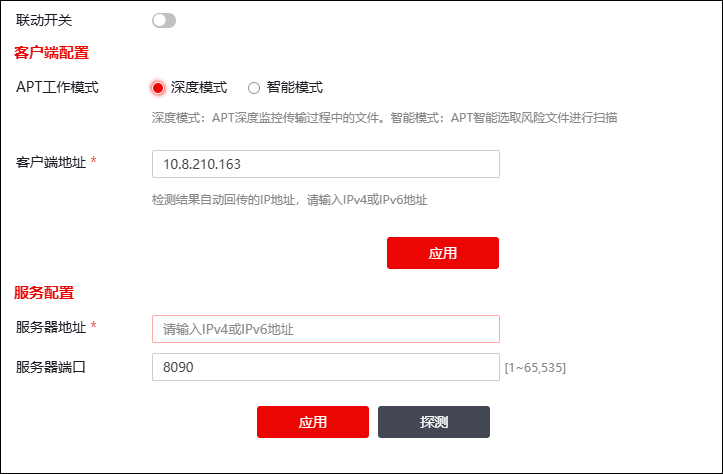

实现NGFW与沙箱联动的配置步骤如下：

| 步骤1 | 选择 ，激活“APT联动配置”页签，如下图所示。 |

在设置APT时，各项参数的具体说明如下表所示。
参数 |
说明 |
|---|---|
联动开关 |
设置是否开启APT联动，状态为“”时表示开启。 |
APT工作模式 |
设置APT的工作模式。可选项为：深度模式、智能模式，默认为智能模式。 说明： 1）深度模式：APT深度监控传输过程中的文件；指所有经由APT模块的报文所携带的文件都会被发往沙箱服务器进行检测。 2）智能模式：APT智能选取风险文件进行监控；指将特定风险性比较高的文件（如exe、so、微软办公系列文件、压缩文件等）发往沙箱服务器进行检测。 3）在大流量环境下，深度模式会比较影响防火墙整体性能，建议开启智能模式。 |
客户端地址 |
必填项，设置防火墙接收检测结果的地址（IPv4/IPv6地址），该地址与APT服务器需正常通信。 |
服务器地址/端口 |
设置进行APT沙箱检测的沙箱服务器地址/端口。在文本框中输入地址后，点击“探测”，可以进行对沙箱服务地址状态的检测。如果通信畅通，系统会提示用户所填地址可用；若不畅通会提示用户所填地址不可用需要更改，直到用户填写了正确的服务地址。 |
| 步骤2 | 点击【应用】按钮使配置生效。 |